Hà Giang là một tỉnh miền núi phía bắc giáp với Trung Quốc. Nằm cách thủ đô Hà Nội 300km, tỉnh Hà Giang có nhiều núi non hùng vĩ. Du lịch Hà Giang đang thu hút giới du khách trong và ngoài nước.
Nhờ vào nguồn tài nguyên thiên nhiên phong phú, cảnh vật nên thơ trữ tình nên Hà Giang là một điểm đến lý tưởng với nhiều du khách. Sau đây làm cẩm nang kinh nghiệm du lịch Hà Giang cần thiết cho du khách.
I. Giới Thiệu Tổng Quan Về Hà Giang.
Hà Giang là một tỉnh miền núi phía Bắc nước ta, có diện tích 7.884km2. Trung tâm kinh tế là thành phố Hà Giang. Có 9 huyện mang những cái tên lạ lùng khó nhớ, vì theo thổ ngữ địa phương: Đồng Văn, Mèo Vạc, Yên Minh, Quản Bạ, Bắc Mê, Hoàng Su Phì, Xín Mần, Bắc Quang và Vị Xuyên. Cư dân ngoài người Việt còn có các dân tộc là Tày, Dao, Sán Dìu, H’Mông…
Địa Hình Hà Giang khá phức tạp, có thể chia làm 3 vùng:
+ Vùng cao núi đá phía Bắc nằm sát chí tuyến Bắc có độ dốc khá lớn. Thung lũng và sông sối bị chia cắt nhiều. Khí hậu mang nhiều sắc thái ôn đới. Nhiệt độ trung bình năm khoảng 24 – 28 độ c. Vào mùa đông nhiệt độ có khi xuống 5 độ c.
+ Vùng cao phía Tây thuộc khối núi thượng nguồn sông chảy, sướn núi dốc, đèo cao, thung lũng và lòng suối hẹp.
+ Vùng thấp gồm khu đồi núi, thung lũng sông Lô và thành phố Hà Giang. Nhiệt độ trung bình từ 21 đến 23 độ c.
Tỉnh Hà Giang nhiều núi non hùng vĩ, đỉnh Tây Công Lĩnh vao 2.419m. Nhiều khu rừng nguyên sinh dồi dào gỗ quý, theo thống kê có tới 1000 loại cây thuốc quý dùng làm dược liệu trị, chữa bệnh. Động vật có nhiều loài hiếm như công, trĩ, phượng, tê tê,… và hàng trăm loài chim thú khác.
II. Thời Điểm Lý Tưởng Du Lịch Hà Giang.
Mỗi một mùa có một vẻ đẹp riêng biệt vì vậy bạn có thể đến Hà Giang bất kỳ thời điểm nào trong năm.
+ Tháng 1, 2 là lễ hội truyền thống đặc sắc của địa phương: lễ mừng thọ của dân tộc Tày, lễ hội chọi trau, đấu ngựa, lồng tồng… Du khách có thể hoà mình vào lễ hội này.
+ Tháng 3: Là lúc những vườn mận, đào nở rộ tràn sắc xuân, nếu bạn muốn du ngoạn, ngắm cảnh Hà Giang thì đây là thời điểm đẹp nhất. Cảnh tượng Hà Giang hiện lên như một bức tranh thuỷ mặc trữ tình.
+ Tháng 4: lễ hội lớn là chợ tình Khau Vai. Với nét văn hoá đặc thù ở địa phương rất kích thích lòng người và cũng là những tình cảm dạt dào của trai gái miền sơn cước.
+ Tháng 5 – 6: Là thời điểm người dân Hà Giang bắt đầu chuẩn bị cho một mùa vụ mới trong mùa nước đổ.
+ Tháng 8 – 9: Khi du khách thăm quan vào lúc này sẽ thấy cảnh tượng những thửa ruộng bậc thang óng ánh màu vàng, trải dài đến bất tận, cảnh tượng thật hùng vĩ.
+ Tháng 10 – 11: Là mùa tam giác mạch nở rộ khắp đồi núi, lúc này chân núi như một thảm hoa tím hồng thơ mộng.
+ Tháng 12: Lúc này là mùa hoa cải vàng rực rỡ.
III. Phương Tiện Di Chuyển Đến Hà Giang.
Để đến Hà Giang, bạn có thể di chuyển bằng 2 phương tiện chủ yếu.
+ Xe máy: Du khách từ Hà Nội lên Hà giang sẽ mất tầm 8 – 10 giờ, tuỳ tốc độ di chuyển. Khoảng cách từ Hà Nội đến Hà Giang tầm 300km vì đường đồi núi nhiều nên cẩn thận khi đi xe máy.
+ Xe khách: Là phương tiện được nhiều du khách tại thủ đô Hà Nội lựa chọn, đi xe khách sẽ tiết kiệm sức lực chỉ cần ra bến xe Mỹ Đình bắt xe lên Hà Giang. Giá vé giường nằm tầm 200k vnđ/vé thời gian chuyến đi là 4 – 5 giờ. Tới tp Hà Giang bạn có thể liên hệ với chủ khách sạn, nhà nghỉ để thuê xe đi khám phá Hà Giang với giá tầm 120k đ/xe/ngày.
Du khách muốn đến tp Hà Giang ở ngay điểm giữa trục Đông Bắc – Tây Nam và gần biên giới Việt – Trung có thể đi theo con đường sau:
+ Từ Lào Cai ở phía Tây qua bằng đường 249 tới Bắc Quang, lên phía Bắc dọc theo sông Lô qua Vị Xuyên, động Phương Thiên mới tới thành phố Hà Giang.
+ Từ Tuyên Quang phía Nam có 2 đường lên: Quốc lộ 2 từ phía cực Nam lên quan Vĩnh Tuy nhập vào đường 279 lên Vị Xuyên, tp Hà Giang. Đường 249 từ phía Đông Nam qua,m nhập vào quốc lộ 2 lên Bắc Quang, Vị Xuyên.
+ Từ Cao Bằng phía Đông Bắc qua bằng đường 24, tới Bắc Mê, thẳng tới thành phố Hà Giang về hướng Tây Bắc.
IV. Khách Sạn Hà Giang.
Sau khi đi đến Hà Giang, công việc đầu tiên của du khách thông thường là tìm chốn trú chân, nghỉ ngơi dưỡng sức cho hành trình sắp tới. Dưới đây là một số khách sạn, nhà nghỉ chất lượng tại Hà Giang để du khách có thể tham khảo.
Thông thường thì phần lớn khách du lịch Hà Giang sẽ ngủ ít nhất 1 đêm tại thị trấn Đồng Văn vì nơi đây có nhiều địa điểm vui chơi hấp dẫn và nơi đây cũng phù hợp để nghỉ ngơi sau 1 ngày khám phá cao nguyên đá Đồng Văn, cực bắc và những cánh đồng tam giác mạch.
1. Hotel Anh Tu
Khách sạn toạ lạc địa chỉ: tổ 1 Cầu Mè, Phương Thiện, Thành Phố Hà Giang, Tỉnh Hà Giang
Giá: chỉ từ 250.000 đồng/đêm.
2. Jungleman Homestay
Khách sạn toạ lạc địa chỉ: đường K8, thôn Chang, xã Phương Thiện (gần bến xe buýt Hà Giang)
Giá: chỉ từ 120.000 đồng/đêm
3. Lo Lo Chai Homestay
Khách sạn toạ lạc địa chỉ: Làng Lô Lô Chải, Lũng Cú, Huyện Đồng Văn, Hà Giang
Giá: chỉ từ 156.000 đồng/đêm
V. Địa Điểm Du Lịch Hà Giang Không Thể Bỏ Qua.
1. Hoàng Su Phì.
Là một huyện biên giới vùng cao thu hút du khách ưa thích phiêu lưu mạo hiểm. Nằm cách tp Hà Giang tầm 50km. Nơi đây với những thửa ruộng bậc thang kéo dài đến tận chân trời. Khi thăm quan vào mùa lúa chín và mùa nước đổ cảnh vật hiện ra với những vẻ đẹp riêng biệt.
2. Dốc Bắc Sum.
Là một con dốc hùng vĩ thuộc xã Minh Tân, huyện Vị Xuyên. Giới phượt thủ ví dốc Bắc Sum như đèo Pha Đin của cao nguyên đá Đồng Văn. Một con dốc độc nhất vô nhị, uốn lượn trải dài hàng cây số, đứng trên cao nhìn xuống dốc như một đường gấp khúc mềm mại giữa thiên nhiên hoa sơ huyền bí.
3. Động Én.
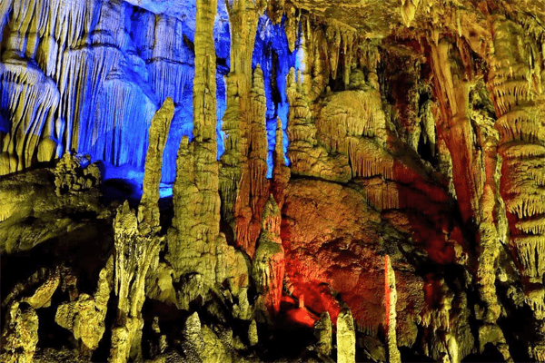
Cách tp Hà Giang 60km, thuộc địa phận huyện Yên Minh. Từ tp Hà Giang qua cổng trời Quản Bạ và những cánh rừng thông luôn được bao phủ mây sương, du khách sẽ tới động Én nguyên sơ, thúc đẩy mọi người tham gia vào một cuộc thám hiểm bên trong hang động.
4. Núi Đôi Cô Tiên Quản Bạ.
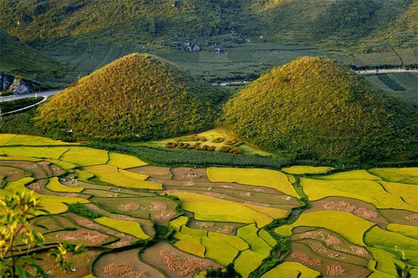
Đây là hai ngọn núi có hình trái đào tiên nằm cạnh quốc lộ 4C, cách thành phố Hà Giang 40km.
Giữa những núi đá trùng điệp và những thửa ruộng bậc thang, hai hòn núi có thể đứng, hình dáng khá đặc sắc, ẩn chứa một huyền thoại liên quan đến việc hình thành và đặt tên núi này là “núi Cô Tiên”.
Ngày nay, do cảnh quan đẹp và thời tiết trong lành của vùng cao nguyên, thích hợp với thư giãn nghỉ dưỡng nên vùng núi đôi Quản Bạ trở thành khu du lịch với đầy đủ tiện nghi, dịch vụ cung ứng cho mọi yêu cầu của du khách.
5. Suối Tiên Và Động Tiên.
Ở phía Bắc, cách thành phố Hà Giang chừng 2km có thắng cảnh Suối Tiên và động Tiên khá đẹp. Cảnh quan vùng này thật thơ mộng, nước suối trong xanh.
Tương truyền, ngày xưa có các tiên nữ từ trên thượng giới xuống vùng này để vui chơi trong dịp tết nên dân gian mới đặt tên như vậy. Nhân dân trong vùng vẫn thường đến động tiên lấy nước thiêng cầu may mắn và lúc giao thừa.
Quần thể này trở thành khu du lịch nghỉ dưỡng tân tiến. Tỉnh Hà Giang cũng xây dựng làng văn hoá các dân tộc trong tỉnh để tiếp nhiều khách du lịch Hà Giang đến thăm quan.
6. Hồ Noong.
Là một hồ nước ngọt trong xanh, hồ được ví như một nàng tiên của vùng cao nguyên đá Hà Giang.
Để đi đến hồ Noong, du khách từ tp Hà Giang phải đi chặng đường dài 23km. Hồ thuộc xã Phú Linh, huyện Vị Xuyên. Hồ nước có sự đặc trưng là có những rừng cây nổi trên mặt nước thay đổi theo mùa.
7.Núi Cấm Sơn.
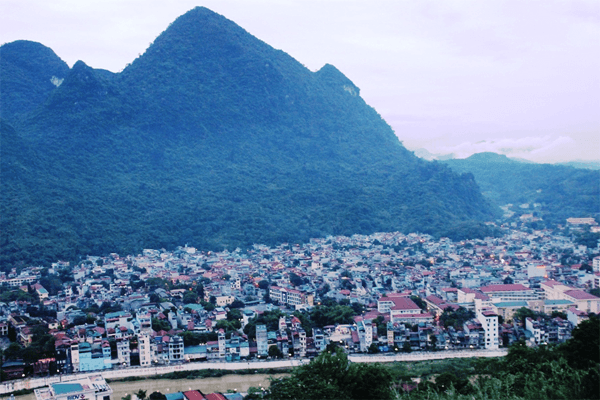
Núi được ví như một con sư tử oai hùng, là địa điểm du lịch Hà Giang hấp dẫn thu hút du khách yêu thích phiêu lưu. Địa hình núi hiểm trở, có hang sâu và vách đá dựng đứng, mang một vẻ đẹp hùng vĩ.
8. Chùa Sùng Khánh.
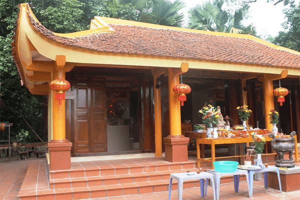
Toạ lạc trên một đỉnh đòi nhỏ thuộc làng Nùng, xã Đạo Đức, huyện Vị Xuyên, cách tp Hà Giang 9km về hướng Tây Nam. Đây là một ngôi cổ tự nổi tiếng tại Hà Giang. Khi đến chùa, du khách sẽ thấy vẻ đẹp thanh tịnh giữa núi rừng hoang vu. Chùa tựa lưng vào dãy núi thấp, mặt hướng ra dòng suối Thích Bích trong xanh.
9. Cửa Khẩu Quốc Tế Thanh Thuỷ.
Là một đầu mối thông thương quan trọng tại Hà Giang sang thị trường Trung Quốc. Là cột mốc 261 đánh dấu biên giới của nước Việt Nam – Trung Quốc. Khi đến đây du khách có thể tham quan du lịch Trung Quốc, hoặc thưởng thức các món đặc sản địa phương.
10.Rừng Thông Yên Minh.
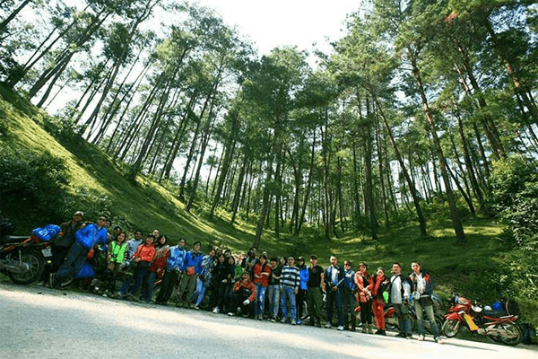
Cách tp Hà Giang tầm 100km về hướng Đông Bắc, đường 4C chạy từ Cán Tỷ đến trung tâm tp huyện sang ba xã: Bạch Đích, Na Khê,m Lao và Chải. Nhiều du khách thích thú khi đi trên con đường này được ngắm nhìn những rừng thông mọc khắp lưng chừng trời.
Cảnh tượng rừng thông Yên Minh ví như “rừng thông Đà Lạt” tại vùng đông Bắc đất nước. Dừng chân tại rừng thông yên minh cảm nhận không khí trong lành, những cây thông reo đùa trong gió, hương thông ngào ngạt…
11. Sủng Là.
Khi thăm đứng trên cao nhìn xuống, Sủng Là đẹp như một bức tranh thuỷ mặc. Để đi đến Sủng Là, từ Yên Minh lên thị trấn Đồng Văn, đến ngã 3 Phó Bảng, nơi ngọn đèo đẹp ôm một thung lũng xanh Sủng Là, con đường mòn uốn lượn, với dãy núi xanh ôm ấp, che phủ khoảng không gian xanh tươi, mát rượi.
12. Thị Trấn Phó Bảng.
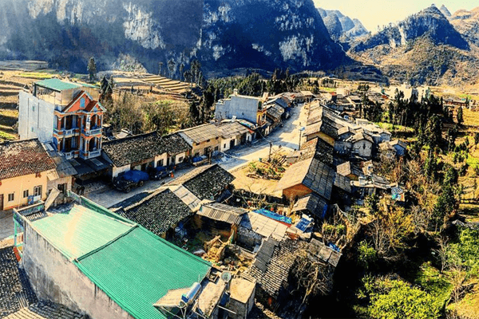
Là một điểm thăm quan đầy kỳ thú, nơi đây trồng nhiều hoa hồng, hoa ở đây nhỏ nhưng sắc màu tươi thắm. Thị trấn nằm sâu bên trong thung lũng cao nguyên đá. Khi thăm quan thị trấn Phó Bảng, du khách sẽ được hưởng thụ một không khí trong lành, hương thơm ngát toả ra từng những bông hồng trồng tại cánh đồng xung quanh cao nguyên đá hùng vĩ.
13. Dinh Vua Mèo.
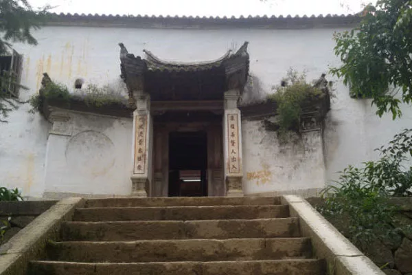
Là một công trình kiến trúc cổ độc đáo, còn có tên gọi là dinh họ Vương, nằm tại một thung lũng ở địa bàn xã Phìn, huyện Đồng Văn, tỉnh Hà Giang.
Khi đến gần dinh thự Vua Mèo, du khách sẽ thấy hai hàng sa mộc cao vút thẳng hàng được xây vào đầu thế kỷ 20, được mô phỏng theo kiến trúc Trung Quốc đời nhà Thanh. Dinh thự có những nét chạm trỗ uốn lượn tinh xảo.
14. Hang Phương Thiện.
Về phía Nam thành phố Hà Giang, cách chừng 7km có một vùng cảnh quan khá hấp dẫn với nhiều hang động tự nhiên, hoang dã như hang dơi, hang làng Lò, hang Phương Thiện.
Trong vùng có nhiều cây trái ngon như là mận, lê, cam, táo… và đặc biệt có đặc sản quý nhất ở địa phương là chè Tuyết San cổ thụ, giống cây chè đặc biệt chỉ sống trên đất cao 900m.
15. Hang Chui.
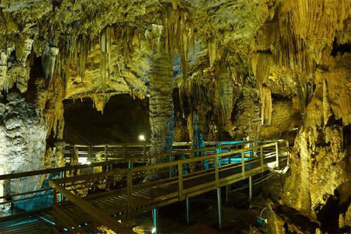
Nằm trong khu vực hang Phương Thiện, hang này ăn sâu vào trong lòng núi khoảng 100m. Vì hang hẹp, người ta phải lách mình mới chui qua được. Nhưng khi vào trong, hang là một khoảng rộng và thoáng, vòm hang cao vút. Nhiều nhũ đá với hình thù kỳ lạ.
Bên trong cũng là nơi trú ẩn của loài dơi. Vào trong nữa, gặp một dòng suối có nguồn từ trên cao đổ xuống thành thác trông rất ngoạn mục.
VI. Đặc Sản Hà Giang.
Ngoài những thắng cảnh đẹp trữ tình, Hà Giang còn thu hút du khách bởi những món đặc sản hấp dẫn khó quên. Sau đây là một số món ăn được nhiều khách du lịch Hà Giang yêu thích.
1. Bánh Cuốn Đồng Văn.
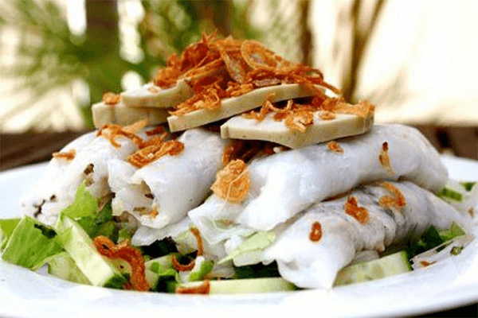
Là món bánh được quầy hàng rong, cửa hàng bán rộng rãi vào buổi sáng tại Hà Giang. Món bánh cuốn Hà Giang khi thưởng thức có nhiều sự khác biệt so với khu vực khác. Bánh được người dân nơi đây tráng mỏng, mịn chấm với nước canh xương, ninh có hành mùi tàu thái nhỏ và miếng chả thơm ngon. Khi thưởng thức một lần sẽ khiến cho du khách không quên.
2. Xôi Ngũ Sắc.
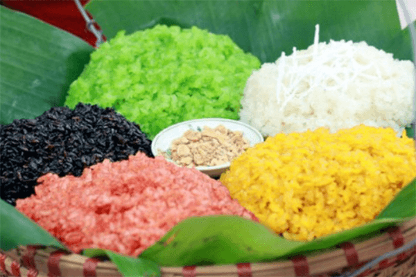
Khi nói về đặc sản Hà Giang thì không thể không nhắc đến món xôi ngũ sắc. Món xôi được làm từ gạo nếp nương, dẻo, mềm mùi thơm đặc trưng. Sở dĩ xôi có 5 màu khác nhau bởi được nhộm từ các loại lá ướp.
Công đoạn chế biến cầu kỳ, lá cây được rửa sạch, đun với nước suối tạo thành màu đặc biệt: vàng, trắng, xanh dương, đỏ, tím, làm nên sự độc đáo của món xôi.
3. Thắng Cố.
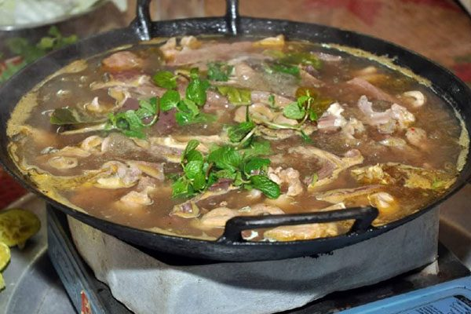
Là món ăn đặc trưng địa phương, món Thắng Cố được bán nhiều ở các hàng rong hay phiên chợ bạn có thể ghé thưởng thức vào nhiều thời điểm trong ngày.
Món ăn được làm từ nội tạng của bò, ngựa, ăn kèm muối, bột đậu và uống cùng rượu ngô hương vị độc lạ.
4. Cháo Ấu Tấu.
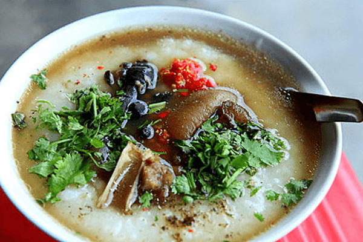
Là món ăn đặc trưng vùng núi Hà Giang. Nguyên liệu được làm từ củ ấu tấu, nấu với gạo nếp nương trộn với chân giò lợn.
Khi nấu lên, cháo có mùi vị đặc sắc, thơm ngậy, khi ăn lần đầu sẽ khó nuốt vì cảm giác cay đắng. Nhưng món này ăn rất có có ích cho sức khoẻ.
5. Phở Chua.
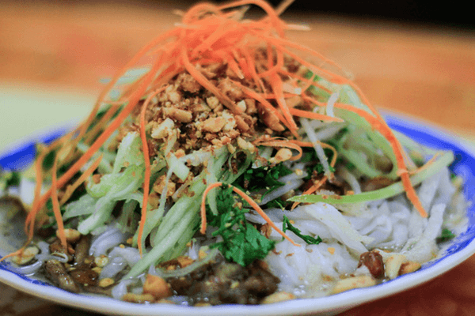
Món ăn này có nguồn gốc từ Trung Quốc, người dân Hà Giang nắm được công thức chế biến, được lưu truyền qua nhiều thế hệ. Hiện món phở chua được dùng nhiều trong đám cỗ và la món điểm tâm của các phiên chợ Hà Giang.